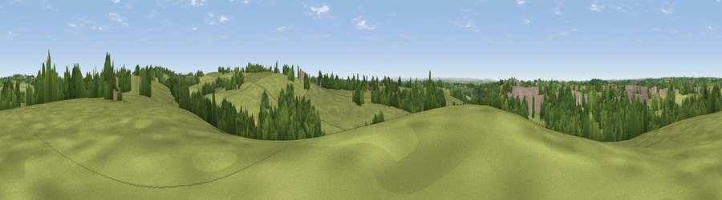

Viewpoint near Holsworthy
#29888 in England · top 69% of its area beats it · near HolsworthyWhere it is
The exact computed spot (SS 35025 03875). Click the marker for map links.
The view, rendered

A 360° render of this exact spot computed from the terrain model, tree cover and land cover — summer colours, afternoon light, calibrated against photographs of famous viewpoints. Real trees, hedges and buildings will differ in detail.
The panorama
Grey silhouette: terrain skyline in each direction (720 bearings, Earth curvature and refraction included). Dashed green: skyline with trees (+15 m) and buildings (+8 m) as obstacles. Blue strip: how far the ground is visible on each bearing.
Where the view opens
Wedge length = distance to the farthest visible ground on that bearing (vegetation-aware). Rings at 10, 25 and 50 km.
What fills the view
68% grassland · 24% woodland · 7% built-up · 1% cropland
Angular shares of the visible panorama (visual magnitude), not map area. Landscape diversity 0.36 (0–1 Shannon).
Key numbers
More beautiful places nearby
The staircase of upgrades: each row has a higher view potential than everything closer. Driving times are estimates from straight-line distance, calibrated against real road routing — check an actual route before setting out.
| Place | Direction | Drive | Score |
|---|---|---|---|
| Viewpoint near Holsworthy | SSW · 1 km | ~3 min | 42.1 |
| Viewpoint near Holsworthy | SW · 1 km | ~4 min | 43.6 |
| Viewpoint near Hollacombe | SE · 2 km | ~6 min | 46.9 |
| Viewpoint near Hollacombe | E · 4 km | ~9 min | 60.3 |
| Viewpoint near Whitstone | WSW · 10 km | ~19 min | 65.1 |
| Viewpoint near Whitstone | WSW · 10 km | ~20 min | 69.4 |
| Viewpoint near Poughill | WNW · 13 km | ~24 min | 73.3 |
| Viewpoint near Poughill | WNW · 15 km | ~26 min | 74.0 |
50.81087, -4.34301 · source: screening · position refined by local search. Computed location — check access rights before visiting.